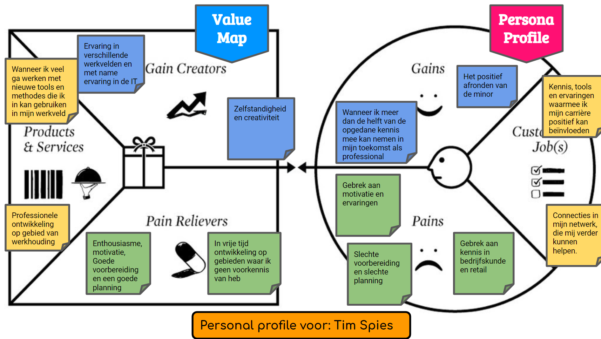
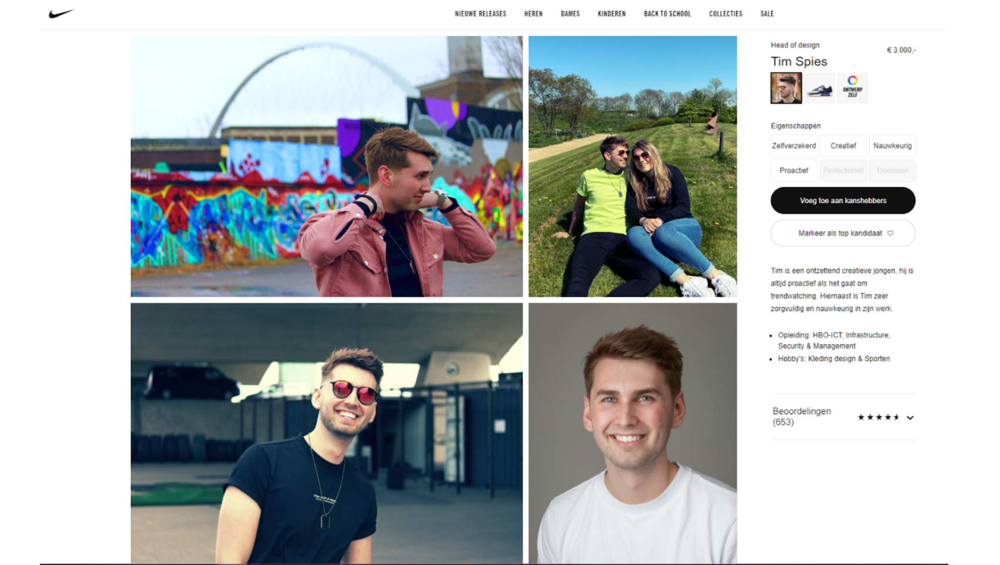
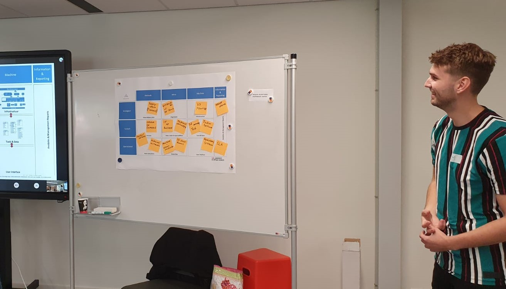

Op deze pagina is alles te vinden over mijn ervaringen, opdrachten en workshops met betrekking tot het vak "Smart Business".
Ontdek meer
Om te ontdekken wat mijn wensen en behoeftes tijdens deze minor zijn, en om te weten te komen welke 'jobs' de minor voor mij moet invullen,
heb ik tijdens de "Smart Working You" workshop, via een gesprek met andere smarties, inzicht gekregen in wat ik uit deze minor wil halen.
Door deze workshop ben ik in staat sturing te geven aan mijn eigen leerproces en zelf activiteiten te initiëren die nodig zijn voor mijn ontwikkeling!
De volgende vragen zijn aan mij gesteld door andere smarties:
Mijn antwoorden zijn in mijn personal profile (hieronder te zien) terug te vinden:

Om meer over mij te vertellen heb ik een korte videoboodschap gemaakt waarin mede-smartie Shkar Baneii mij interviewt.
Deze video is hieronder te zien:
Naast deze video heb ik ook een introductie-poster gemaakt in het format van een website welke ik veel gebruik. Deze is hieronder te zien:

Deze eerste week van Smart Business heeft mij inzicht gegeven in mijn doelen voor deze minor!
Ik heb voor mijzelf in totaal drie doelen opgesteld die ik absoluut wil behalen gedurende deze minor. Dit zijn:
Netwerken:
Ik hecht veel waarde aan een breed professioneel netwerk en ik wil gedurende deze minor mijn professionele netwerk ook uitbreiden. Dit kan door omgang met klasgenoten en begeleiders.
Tools en ervaringen:
Door deel te nemen aan deze minor wil ik tools ontdekken die ik in mijn carrière kan inzetten om mij te helpen. Hiernaast wil ik ervaringen opdoen die mijn professionaliteit naar een hoger niveau tillen.
Ontwikkeling:
Ik probeer op professioneel gebied zo veel mogelijk te ontwikkelen en ik wil meer dan de helft van de opgedane kennis uit deze minor meenemen in mijn toekomst als professional.
Tijdens een van de workshops van Smart Business kwam Geert Rensen van het bedrijf Be Informed langs om ons meer inzicht tegeven in het maken van een Business Model Canvas (BMC), Design Thinking/creativiteit, veranderplannen en business cases.
Verzekeraar AXA wilt weer winstgevend worden in Turkije.
De Turkse regering heeft besloten om de premies van autoverzekeringen collectief te verlagen met 30%. Dit heeft ervoor gezorgd dat de auto casco verzekeringen verliesgevend zijn geworden.
AXA wilt graag actief blijven in de markt. Het verzekeringsbedrijf verkoopt de polissen via een agentennetwerk. AXA heeft dus geen rechtstreeks contact met zijn klanten.
De onderzoeksvraag luidt: Op welke wijze kan AXA, met behulp van Smart concepten, haar business model aanpassen om toch winstgevend en actief te blijven?
Het probleem zit hem bij deze casus in de hoeveelheid informatie die AXA over haar klanten heeft. Namelijk, heel weinig. Hiernaast is er vanuit de klant weinig vertrouwen in AXA, maar er is wel veel vertrouwen in de agenten van het agentennetwerk.
Door het maken van een BMC komen we meer te weten over AXA en haar relaties met klanten en partners. Het BMC heb ik samen met drie andere smarties gemaakt en is hieronder afgebeeld:
Nu de klantrelaties duidelijk zijn, is het de bedoeling om een "Smart" oplossing te verzinnen en uit te werken.
Onze uitwerking kent twee speerpunten. Dit zijn:
Klantrelaties opbouwen
AXA werkt veel samen met schadeherstel bedrijven. Nu hebben wij bedacht dat AXA haar eigen schadeherstel locaties kan openen in samenwerking met de partners van AXA.
Op deze manier kan AXA langzaam maar zeker een vertrouwensband met de klant kan opbouwen. Het vertrouwen van de klant in AXA is belangrijk voor de loyaliteit van de klant.
Het doel is om de klant aan AXA te koppelen, zonder het agentennetwerk als tussenpersoon.
Andere manieren om een klantrelatie op te bouwen zijn het bieden van een goede webservice en het opzetten van adviesbureaus waar klanten terecht kunnen met vragen. Ook op deze manier verdwijnt het agentennetwerk als tussenpersoon.
Klantinformatie verzamelen
De kleine hoeveelheid informatie die AXA over de klant bezit is ook problematisch. Om meer informatie te verzamelen is het mogelijk om via aanvullende verzekeringen meer informatie over de klanten te winnen.
Ook via adviesbureaus en de webservice kan meer informatie over de klant verzameld worden. Vervolgens kunnen, met behulp van Big Data, risicoprofielen voor klanten worden gegenereerd.
Op basis van deze risicoprofielen kan AXA bepaalde risicogroepen mijden en daarmee voorkomen veel schade uit te betalen.
Hieronder volgt de mindmap die wij tijdens onze uitwerking van de opdracht hebben gemaakt:
We hebben uiteindelijk onze oplossing gepresenteerd aan de klas en aan Geert Rensen. Er waren kleine aandachtspunten met betrekking tot de oplossing, maar de presentatie was goed verlopen.
Ondanks dat ik al bekend was met het BMC, heeft deze workshop mij toch nieuwe inzichten gegeven. Bij het maken van het BMC voor ATAG hebben deze nieuwe inzichten ook zeker geholpen.
In deze workshop deelt Paul Kalis, COO van Qander, zijn ervaringen met organisatie transities, het samenwerken in de keten en het beïnvloeden van stakeholders.
Tijdens deze workshop is het (voor mij nieuwe) TOM3, oftewel Target Operating Model behandeld. Dit model combineert de drie modellen: BMC, Value Propesition en Value Realisation tot het TOM3 model.
Paul maakt gebruik van duidelijke en begrijpelijke voorbeelden aan de hand van een casus over grasmaaien, hierdoor is het concept makkelijk te begrijpen.
De template voor het TOM3 model dat Paul aan ons heeft laten zien staat hieronder afgebeeld:
Na de uitleg van Paul ben ik samen met mijn projectgroep aan de slag gegaan om het TOM3 model voor ons project bij ATAG uit te werken. Dit was voor ons alle drie de eerste keer dat we een TOM3 model invulden.
Waar we vastliepen vroegen we Paul of hij verduidelijking kon geven. We hebben uiteindelijk het TOM3 model helemaal ingevuld.
Ons ingevulde TOM3 model is hieronder afgebeeld:
Nadat we het TOM3 model hebben ingevuld heb ik het model ook gepresenteerd aan Paul en de klas (hieronder afgebeeld). Ik heb voor ieder onderdeel specifiek uitgelegd wat wij hebben ingevuld en wat onze afwegingen daarbij waren. Na afloop gaf Paul een mooi compliment. Hij had namelijk nog niet vaak zo een gedetailleerd TOM3 model gezien.
Deze workshop was heel leerzaam en de inhoud was ook bruikbaar tijdens het project. Het begrijpen van het TOM3 model is zeer waardevol gebleken bij het beantwoorden van de hoofdvraag van ons onderzoek voor ATAG. Ik ga deze nieuwe tool ook zeker in het vervolg van mijn studie (afstudeerstage) en in mijn verdere professionele carrière inzetten!
In de workshop Master Your Own Mind and Own Your Life geeft Ilke Oner inzicht in de functies van het brein, en hoe je deze functies op een positieve manier voor jou kan laten werken. Deze workshop bevatte een aantal interessante onderdelen waaronder een opdracht en zeer interessante informatie over het brein.
De opdracht die bij deze workshop hoort werkt als volgt. Ik moest de de namen opschrijven van vijf mensen die mij inspireren. Vervolgens schreef ik voor iedere naam op hoe deze persoon mij inspireert. Door op te schrijven hoe andere personen jou inspireren, schrijf je eigenlijk ook op hoe jij als persoon wilt zijn. Het doel van deze opdracht is dan ook om te kijken hoe je wilt zijn als persoon, en om vervolgens te kijken of dit in lijn is met hoe je nu bent. Als dit niet in lijn is met elkaar, waardoor komt dit dan en hoe kan je dat veranderen.
Het meest interessante onderwerp tijdens deze workshop vond ik communicatie en met name "rapport". Ilke heeft uitgelegd dat maar 7% van communicatie tussen personen verbaal is. De overige 93% is op basis van stem, toonhoogte en de fysiologie. Onder fysiologie valt de lichaamstaal en houding, gezichtsuitdrukking, kleding, haar en andere uiterlijke eigenschappen.
Rapport werd uitgelegd als vergelijkbaar met een "klik" die je met iemand kan hebben. Het gebeurt onbewust, maar het is wel te beïnvloeden wanneer je er bewust mee omgaat. Bewust rapport met iemand opbouwen kan op de volgende manieren:
Het is bij het opbouwen van rapport belangrijk om je te spiegelen aan je gesprekspartner zonder dat dit opvalt.
Ik ben heel enthousiast over deze workshop en met name de tips over het opbouwen van rapport. Het opbouwen van rapoport kan heel belangrijk en zelfs doorslaggevend zijn bij solicitatiegepsrekken. Na de workshop heb ik, samen met Shkar, Ilke benaderd voor extra informatie over deze onderwerpen. Ilke heeft ons stof van Tony Robbins aanbevolen. Hiernaast heeft ze ook "Your Brain, Explained" en "untethered soul" aangeraden. Sinds deze workshop ben ik mij zeer bewust van rapport en probeer ik zoveel mogelijk te oefenen met het opbouwen van rapport. Dit is alleen lastig gebleken vanwege het gebrek aan sociale interactie gedurende de coronacrisis.
In deze workshop geven Rosanne Hakfoort en Lisette Klein, van het bedrijf BlinkLane, uitleg over de toepassingen van Agile. Blinklane houdt zich vooral bezig met transformaties van grote bedrijven.
Tijdens de workshop werd als eerst de theorie behandeld. Hier ben ik al redelijk bekend mee, omdat de projecten op school altijd via de SCRUM of KANBAN methode werden uitgevoerd.
Na de theorie werden we uitgedaagd via een game die we in groepen mochten maken.
Voor een korte uileg over SCRUM, zie de onderstaande video waarin SCRUM binnen 120 seconden wordt uitgelegd:
De opdracht bestond uit een Scrum Game. De klas werd in groepen van ongeveer zes mensen ingedeeld. De bedoeling van de game was het nabootsen van een sprint binnen een paar minuten.
De groep krijgt vijf minuten om de sprint in te plannen. Voorgedefinieerde kaartjes (zie afbeelding hieronder) bevatten de opdrachten die tijdens de sprint uitgevoerd kunnen worden.
Het is aan de groep om te beoordelen welke opdrachtren binnen de sprint (zie afbeelding hieronder) correct kunnen worden afgerond. Voor iedere correct afgeronde opdracht verdient de groep punten.
Een goede organisatie tijdens de voorbereiding en uitvoering was de sleutel tot succes bij deze opdracht.
Deze workshop was leuk en ondanks mijn ervaring met het werken met Agile ook leerzaam. De Scrum Game heeft mij nieuwe inzichten gegeven in de planning van een sprint. Deze inzichten heb ik ook ingezet tijdens het project voor ATAG en zijn dus van toepassing geweest.